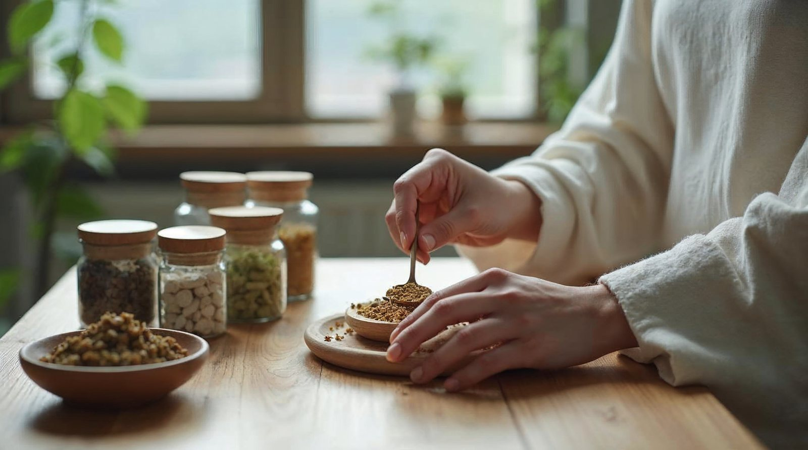
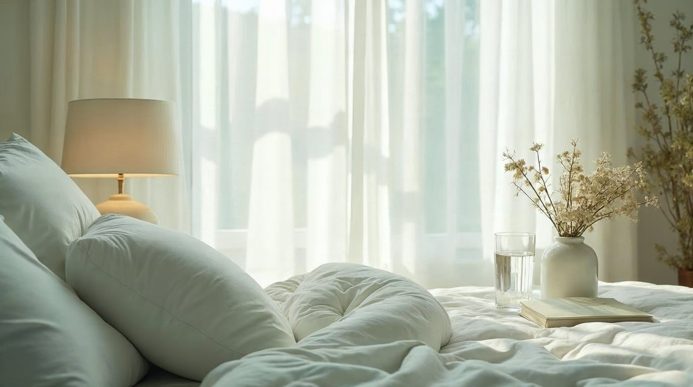
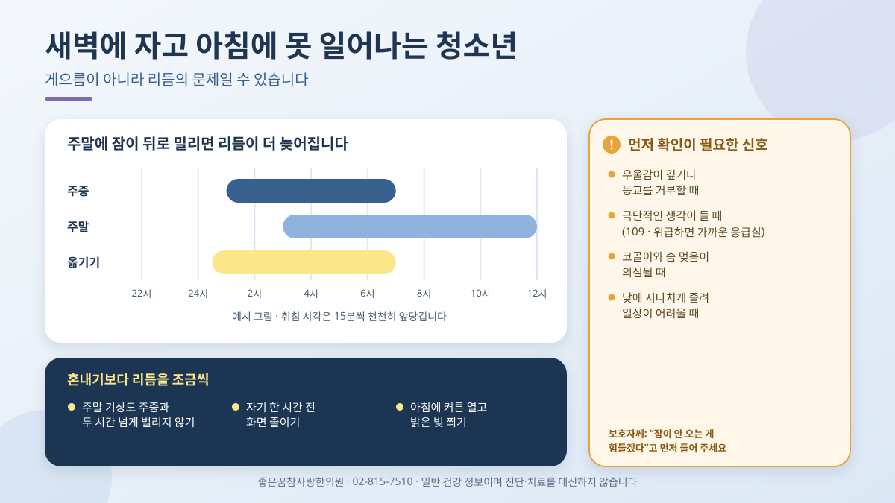

이종호 한의사 감수좋은꿈참사랑한의원 대표원장 (한의사 면허번호 19769)발행 2026-11-23 · 수정 2026-11-26
이 글의 차례
사춘기에는 몸의 시계가 뒤로 밀려 밤에 잠이 늦게 오고 아침에 일어나기 힘들어지는 경향이 있는 것으로 알려져 있습니다. 게으름이 아니라 리듬의 문제일 수 있어, 혼내기보다 생활을 함께 들여다보는 것이 먼저입니다. 노량진·상도동 학원가처럼 밤늦게까지 공부하는 환경에서는 더 흔하게 보입니다.
시험 주간처럼 며칠 늦게 자는 정도라면 시험이 끝난 뒤 1~2주 안에 리듬을 되돌려 보시고, 한 달 넘게 지각이나 결석이 이어지면 진료에서 함께 살펴보시길 권합니다. 다만 충분히 자는데도 수업 시간마다 잠들 만큼 졸리다면 소아청소년과나 수면 검사가 가능한 의료기관에서 먼저 확인받아 보세요.
왜 이런 불편이 생길 수 있나요
- 사춘기에는 잠을 부르는 몸의 신호가 늦게 나오는 경향이 있어 같은 시각에 누워도 잠이 늦게 올 수 있습니다.
- 자기 전 휴대폰, 게임, 영상의 밝은 화면과 자극이 잠을 더 늦출 수 있습니다.
- 학원과 숙제로 저녁 일정이 늦게 끝나고, 늦은 저녁과 간식이 이어지는 경우
- 에너지음료와 커피 같은 카페인을 시험 기간에 자주 마시는 경우
- 주중에 모자란 잠을 주말에 몰아 자면서 리듬이 더 밀리는 경우
- 친구 관계나 성적 부담처럼 말로 꺼내기 어려운 고민이 잠자리에서 떠오르는 경우
늦게 자는 습관이 몇 주 이어지면 아침 입맛이 없어 아침을 거르고, 오후에 몰려오는 졸음을 카페인으로 버티고, 다시 밤에 잠이 안 오는 고리가 생기기 쉽습니다. 그래서 잠드는 시각 하나보다 하루 전체의 흐름을 함께 봅니다.
먼저 이렇게 여쭙니다
- 주중과 주말에 몇 시에 자고 몇 시에 일어나나요?
- 자기 전 휴대폰과 게임, 영상 시간은 얼마나 되나요?
- 낮에 졸리거나 학교생활이 어려운가요?
- 카페인 음료는 얼마나 마시나요?
- 기분이 가라앉거나 학교 가기를 힘들어하나요?
- 아침밥은 먹고 가나요? 저녁은 몇 시에 먹나요?
보호자와 아이가 함께 체크해 볼 수 있는 목록입니다. 세 가지 이상 해당하면 2주 정도 기록을 시작해 보세요.
- 주중 잠드는 시각이 자정을 넘기는 날이 일주일에 네 번 이상이다.
- 주말 기상 시각이 주중보다 세 시간 넘게 늦다.
- 자기 직전까지 휴대폰을 손에 들고 있다.
- 오후 늦게 에너지음료나 커피를 마신다.
- 아침을 거르는 날이 많다.
- 수업 시간에 졸아서 지적을 받은 적이 있다.
- 요즘 짜증이 늘거나 말수가 줄었다.
일상에서 먼저 해 볼 수 있는 것
- 주말에도 일어나는 시각을 주중과 두 시간 넘게 벌리지 않기
- 자기 한 시간 전부터 화면을 줄이고 방을 어둡게 하기
- 아침에 일어나면 커튼을 열어 밝은 빛을 쬐고, 낮에 몸을 움직이기
- 오후 늦은 카페인과 에너지음료 피하기
- 취침 시각을 15분씩 앞당기며 천천히 옮기기
- 학원에서 늦게 돌아온 날은 무거운 저녁 대신 따뜻하고 가벼운 음식으로 마무리하기
상황에 따라 이렇게 바꿔 볼 수 있습니다.
- 예를 들어 밤 10시가 넘어 학원에서 돌아오는 수험생의 경우, 숙제를 마친 뒤 바로 휴대폰을 보기보다 씻고 불을 줄인 뒤 15분쯤 가벼운 책을 읽는 순서를 정해 두면 몸이 잠들 준비를 하기 쉬워집니다.
- 예를 들어 방학이 시작되자 새벽 서너 시에 자고 낮 12시가 넘어 일어나게 된 경우, 개학 2주 전부터 기상 시각을 사나흘마다 30분씩 앞당기면 개학 첫 주가 덜 힘들 수 있습니다.
- 예를 들어 시험 기간마다 에너지음료로 밤을 새우는 경우, 마지막 카페인을 오후 이른 시간으로 정하고 시험 전날만큼은 평소 시각에 눕는 것부터 함께 정해 봅니다.
이런 변화는 하루 이틀이 아니라 2~3주는 지켜봐야 몸의 시계가 따라옵니다. 시험 기간의 잠은 시험 기간 수면 관리, 카페인 고민은 에너지음료와 커피로 잠이 안 올 때에서 더 자세히 다룹니다.
보호자께
- 혼내기보다 "잠이 안 오는 게 힘들겠다"고 먼저 들어 주세요.
- 변화는 조금씩 옮겨야 오래갑니다. 한꺼번에 바꾸려 하지 않아도 됩니다.
- 보호자도 같은 시간에 거실 불을 줄이고 화면을 내려놓으면 아이가 따라오기 쉽습니다.
- 아침에 깨울 때 큰 소리보다 커튼을 열어 빛을 들이고, 일어난 뒤 따뜻한 물이나 가벼운 아침을 챙겨 주세요.

한의원에서 함께 살필 수 있는 경우
- 늦게 잠드는 생활이 몇 주째 이어지고 낮에 지쳐 하는 경우, 하루 일과와 잠을 함께 살핍니다.
- 입맛이 없거나 아침을 거르고 소화가 불편한 경우, 식사 리듬을 함께 살핍니다.
- 시험 기간마다 긴장으로 잠을 설치는 경우, 긴장과 몸의 신호를 함께 여쭙습니다.
- 오래 앉아 공부하면서 목과 어깨가 굳어 잠자리가 불편한 경우, 몸의 긴장을 함께 살핍니다.
좋은꿈참사랑한의원에서는 아이가 편하게 이야기할 수 있도록 천천히 설명하며 듣고, 진맥을 기본으로 하고 필요하다고 판단될 때 설진을 더해 몸 상태를 살핀 뒤 나이에 맞는 방법을 보호자와 함께 정합니다.
첫 방문에는 아이의 하루 시간표를 학교, 학원, 집으로 나눠 함께 그려 보고, 잠과 식사, 화면 사용이 어디서 겹치는지 찾습니다. 보호자께는 따로 집에서 본 모습과 복용 중인 약을 여쭙습니다. 귀가 전에는 집에서 함께 지켜볼 점을 알려 드리고, 다음 진료에서는 그 2주 동안의 기록을 보며 이어서 이야기를 나눕니다.

이렇게 기록해 오시면 상담이 쉬워집니다
- 2주 동안 잠든 시각과 일어난 시각(주중·주말 구분)
- 자기 전 화면 사용 시간과 카페인 음료
- 학원 끝나는 시각과 저녁 식사 시각
- 복용 중인 약과 지난 진료 기록
- 아침에 일어날 때의 기분과 입맛(좋음·보통·나쁨 정도로)
기록은 아이가 직접 쓰도록 하고, 보호자는 빠진 날만 함께 채워 주시면 아이가 자기 리듬을 스스로 알아차리는 데도 도움이 됩니다.
이런 증상은 먼저 확인이 필요합니다
- 우울감이 깊거나 등교를 거부하는 경우
- 극단적인 생각이 드는 경우(☎ 109)
이런 신호가 있으면 한의원보다 가까운 병원이나 응급실을 먼저 찾으세요.

여쭙는 것
- 주중과 주말에 몇 시에 자고 몇 시에 일어나나요?
- 자기 전 휴대폰과 게임, 영상 시간은 얼마나 되나요?
- 낮에 졸리거나 학교생활이 어려운가요?
생활에서 해 볼 것
- 주말에도 일어나는 시각을 주중과 두 시간 넘게 벌리지 않기
- 자기 한 시간 전부터 화면을 줄이고 방을 어둡게 하기
- 아침에 일어나면 커튼을 열어 밝은 빛을 쬐고, 낮에 몸을 움직이기
한의원에서 함께 살필 것
- 늦게 잠드는 생활이 몇 주째 이어지고 낮에 지쳐 하는 경우, 하루 일과와 잠을 함께…
- 입맛이 없거나 아침을 거르고 소화가 불편한 경우, 식사 리듬을 함께 살핍니다.
- 시험 기간마다 긴장으로 잠을 설치는 경우, 긴장과 몸의 신호를 함께 여쭙습니다.
먼저 확인이 필요한 신호
- 우울감이 깊거나 등교를 거부하는 경우
- 극단적인 생각이 드는 경우(109)
한눈에 보는 표
| 구분 | 핵심 |
|---|---|
| 여쭙는 것 | 주중과 주말에 몇 시에 자고 몇 시에 일어나나요? 자기 전 휴대폰과 게임, 영상 시간은 얼마나 되나요? |
| 생활에서 해 볼 것 | 주말에도 일어나는 시각을 주중과 두 시간 넘게 벌리지 않기 자기 한 시간 전부터 화면을 줄이고 방을 어둡게 하기 |
| 한의원에서 함께 살필 것 | 늦게 잠드는 생활이 몇 주째 이어지고 낮에 지쳐 하는 경우, 하루 일과와 잠을 함께 살핍니다. 입맛이 없거나 아침을 거르고 소화가 불편한 경우, 식사 리듬을 함께 살핍니다. |
| 먼저 확인이 필요한 신호 | 우울감이 깊거나 등교를 거부하는 경우 극단적인 생각이 드는 경우(109) |
자주 묻는 질문
청소년도 한의원에서 진료받을 수 있나요?
네. 나이와 몸 상태에 맞춰 신중하게 정하며, 복용 중인 약이 있으면 모두 알려 주세요. 보호자와 함께 오시면 이야기가 더 수월합니다.
수면제를 써도 되나요?
청소년에게는 약을 임의로 쓰지 말고 소아청소년과나 정신건강의학과 의사와 상의하세요.
주말에 몰아 자도 되나요?
주말 늦잠이 길면 월요일 리듬이 더 무너질 수 있어 주중과 주말의 기상 시각 차이를 줄이는 것이 좋습니다.
휴대폰을 아예 빼앗아야 하나요?
갑자기 빼앗기보다 자기 전 한 시간은 거실에 두는 것처럼 함께 정한 규칙이 오래가는 경우가 많습니다.
얼마나 지켜보고 진료를 받으면 될까요?
생활을 2~3주 바꿔 봐도 아침에 일어나지 못해 지각이나 결석이 잦으면 상담을 권합니다. 충분히 자는데도 낮에 지나치게 졸리면 소아청소년과나 수면 검사가 가능한 의료기관에서 먼저 확인받아 보세요.
좋은꿈참사랑한의원은 재진 때 지난번 이야기부터 이어서 여쭙니다. 진료시간과 예약은 오시는 길에서 확인하세요.
어디서 상담받을 수 있나요?
좋은꿈참사랑한의원은 서울 동작구 만양로2길 2 신성빌딩 3층·5층(서울 동작구 상도동, 7호선 상도역 3번 출구 근처)에 있습니다. 한의사 3명(이종호 대표원장, 조영기 수석진료원장, 정원영 진료원장)이 진료합니다. 진료시간은 평일 09:30~20:00(점심 13:00~14:00), 토·일·공휴일 09:30~15:00이며, 방문 전 전화로 확인을 권합니다. 예약은 네이버 예약, 카카오톡 상담, 전화 02-815-7510로 받습니다.
이 글은 일반적인 건강 정보이며 개인의 진단이나 치료를 대신하지 않습니다. 증상이 있거나 복용 중인 약이 있다면 진료를 통해 확인하세요. 치료 효과는 개인마다 다를 수 있습니다.
작성 기준: 일반적으로 알려져 있는 건강 정보를 참고해 정리했습니다(대표원장 감수). 증상 기록은 1~2주 동안 하루 1회, 비슷한 시간에 적어 오시면 지난 상태와 비교하기 쉽습니다.